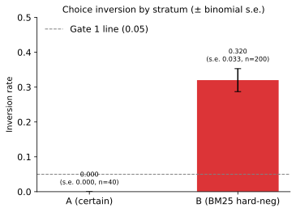
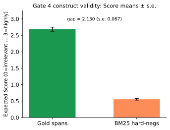
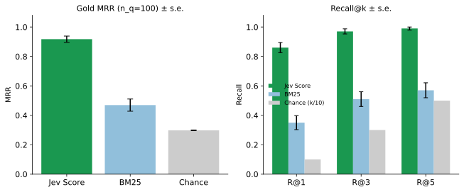

How to read this report
This site is written for a reader who is fluent in finance, private equity, and ordinary empirical work, and who has not spent time in legal natural-language processing or information retrieval. The bar is re-implementability: after one careful pass you should be able to download the same public contracts, freeze the same gold pairs (the human-marked clause spans, locked before any judge call), build the same keyword candidate lists, call the same structured judge, and recompute the same seven gates.
Every short label that appears in a result table is taught in the sections below, in the order you need it, before that table. Uncertainty is a standard error (written “s.e.”). We never use the letters STE. Dollar amounts, sample sizes, dates, and seed 20260920 are the observed figures from run cuad-jev-2026-09-20. Nothing here is a product claim.
Read in this order:
- The corpus — what the 510 contracts and 41 categories are.
- What the benchmark tests — location of a marked span versus relevance of a text to a category.
- The structured judge — typed Choice and Score, not chat.
- The keyword baseline — Best Match 25 as a cheap retrieval baseline.
- How the test pairs are built — hard negatives, Stratum A, Stratum B.
- Inversion — what it means for the judge to reverse the human label.
- Construct validity — why gold-versus-distractor scores are a measurement check.
- Calibration — Brier score, reliability, expected calibration error.
- Ranking — mean reciprocal rank and recall at k.
- Literature anchor — published DeBERTa extractive numbers; not re-run here.
- The seven gates — each pass line in ordinary language.
- Procedure — download → freeze gold → candidates → judge calls → gates.
- How to read the figures — what each axis is.
- Selected estimates — the numbers, now that the terms exist.
Companions: the Analysis (methods, figures, limitations) and the Report (gate tables, freeze timestamps, cost). Machine-readable outputs live in results/gates.json and results/diagnostics.json.
The corpus: CUAD and the Atticus Project
The Contract Understanding Atticus Dataset (CUAD, pronounced “quad”) is a public set of commercial contracts released by the Atticus Project and described in Hendrycks, Burns, Chen, and Ball, CUAD: An Expert-Annotated NLP Dataset for Legal Contract Review (NLP in the title is natural-language processing), Conference on Neural Information Processing Systems (NeurIPS) Datasets and Benchmarks, 2021 (arXiv:2103.06268). The text is licensed Creative Commons Attribution 4.0 (CC BY 4.0). This bench uses file CUAD_v1.json in Stanford Question Answering Dataset (SQuAD) layout. No customer contract, Maybern tenant file, or other private corpus is used.
What is in the file. After our paragraph split (scripts/prepare_cuad.py):
| Count | What it is |
|---|---|
| 510 | Contracts (U.S. Securities and Exchange Commission–style commercial agreements: licenses, reseller agreements, transportation contracts, and the like) |
| 41 | Requested clause categories — diligence questions a reader would search for |
| 13,823 | Human-marked spans (contiguous character ranges the annotators said answer a category question) |
| 21,598 | Paragraph-ish chunks we cut from the contracts (target ≤1,600 characters; median length 1,364 characters) |
| 6,702 | Category questions that have at least one marked span in that contract |
| 14,208 | Category questions marked impossible in that contract (the clause is not there) |
A category is a diligence topic with a fixed “Details” prompt from the Atticus questionnaire. Examples: Governing Law (“Which state/country's law governs the interpretation of the contract?”), Cap On Liability (is there a cap on recovery if a party breaches?), Anti-Assignment (is consent or notice required if the contract is assigned?), License Grant, Notice Period To Terminate Renewal. The 41 names and prompts are in data/clean/categories.json.
A span is the exact text the human annotators highlighted as the answer. A paragraph is our chunk of the surrounding contract. Spans are mapped onto paragraphs by character-offset overlap. The judge never writes a span: gold is the Atticus marks only.
What the benchmark tests
Two measurement ideas are easy to mix up. This bench separates them.
- Annotation / location. Did a system recover the same character span a human highlighted? That is extractive overlap — a highlighting task.
- Relevance. Given a category description, is text A more on-point than text B? That is a judgment task.
A nearby paragraph can share words with a Cap On Liability clause (dollars, “notwithstanding,” “in no event”) without being the cap. Keyword hit-rate and span overlap do not, by themselves, say that a model judged relevance.
The question registered here:
Under a fixed pairwise criterion and a four-level graded score, does the structured judge recover (i) obvious gold-versus-unrelated orderings, (ii) discrimination against keyword-similar distractors, with calibration reported, and (iii) a score ordering in which human-marked spans sit above those distractors under the same category question?
Gates 1, 3 (signal), 4, and 6 have pass/fail or signal lines written before any live call. Gates 2, 5, and 7 are report-only.
The structured judge: TypeSafe Jev Choice and Score
TypeSafe is an application programming interface (API) for typed model judgments: the response is a structured object, not a chat paragraph. Jev is the judge model. This run requested jev-latest; live responses resolved to jev-1.13.0. Input is priced at $0.042 per million tokens; output is free. The exact criterion string, never paraphrased in the call, is:
more relevant to the requested contract category
Two typed endpoints are used.
Choice. The API is given Text A, Text B, the category name, and the Atticus “Details” prompt. It returns a discrete winner (A or B) and probabilities p(A) and p(B). That is a pairwise judgment, not a generated explanation.
Score. The API is given one paragraph and four ordered levels — irrelevant, weakly relevant, relevant, highly relevant. It returns a probability on each level. The expected score is the probability-weighted level index: 0·p(irrelevant) + 1·p(weakly relevant) + 2·p(relevant) + 3·p(highly relevant), so the number lives on 0 to 3.
We do not use a chat model as a judge on the main tables. We do not use Jev to construct gold.
The keyword baseline: Best Match 25
Best Match 25 (BM25) is a 1990s keyword ranking formula (Robertson and colleagues; Text REtrieval Conference–style retrieval). It scores a paragraph by how often the query’s words appear in it, discounted by how common those words are in the rest of the corpus and by paragraph length. It does not parse contracts and it does not know what a liability cap is. Implementation here: rank_bm25.BM25Okapi on lowercased alphanumeric tokens.
We use Best Match 25 in two cheap roles:
- to pick look-alike distractors (paragraphs that share vocabulary with the marked span);
- as a retrieval baseline when we rank ten candidate paragraphs for a (contract, category) query.
If a structured judge cannot beat “count the overlapping words,” the bench is not showing anything beyond lexical match. Best Match 25 is that bar, not a neural retriever.
How the test pairs are built
A negative is a paragraph that is not the human-marked span for the requested category. A hard negative is a negative that a keyword ranker would surface — a same-contract look-alike, not a paragraph from an unrelated agreement. Testing only against obviously unrelated text would let a keyword counter look competent.
The pairs are split into two strata (pre-specified slices, not data-driven clusters) plus a ranking set. Seed 20260920. Construction is in scripts/build_gold_pairs.py and data/pairs/PAIR_MANIFEST.md. Gold was written to data/pairs/gold_pairs.jsonl before the first live Jev call (report file 17:30:16 EDT; gold file 17:32:37 EDT, 20 September 2026).
| Slice | n | Construction |
|---|---|---|
| Stratum A (certain / easy) | 40 | A marked span versus a paragraph from a different contract that has no human mark for that category. Length band about 0.4–2.5× the gold span when available. Prefers non-meta categories (not document name, dates, or parties). |
| Stratum B (labeled / hard) | 200 | A marked span versus the highest Best Match 25 paragraph in the same contract that does not overlap the gold character range. The keyword query is the span text plus the category name and Details prompt. At most 12 pairs per category and 4 per contract. |
| Candidate queries | 100 × ≤10 paragraphs | A (contract, category) pair with at least one gold span and at least five paragraphs. Best Match 25 over that contract’s chunks, query = category + Details; keep the top 10. |
Gold injection. On 28 of the 100 ranking queries, no gold paragraph appeared in the Best Match 25 top 10. We then insert one gold paragraph into the set of ten so Jev’s rank of gold is measurable, and we log gold_injected = true. Injection is not counted as keyword-retrieval success: Best Match 25 ranking metrics use the pre-injection rank (those 28 ranks sit between 11 and 204). Jev always sees gold among the scored ten; the keyword baseline does not get that gift.
Main Choice tables strip party names and dates (scripts/strip_meta.py) so the judge is not rewarded for matching letterhead. Gate 6 re-runs Stratum A with names and dates left in.
Inversion
Each Choice pair is shown twice, with Text A and Text B swapped, so a preference for whichever snippet is on the left cannot decide the outcome. The two probabilities are mapped onto the gold side and averaged. Call that average p(gold) — the judge’s implied probability that the human-marked span is the more relevant text.
If p(gold) is below 0.5, the implied winner is the distractor. That event is an inversion: the judge reversed the human label. The inversion rate is the share of pairs on which that happens.
An order-flip is a narrower check: the discrete winner in the A-then-B showing disagrees with the winner in the B-then-A showing. Stratum A had 0 order-flips in 40 pairs. Stratum B had an order-flip rate of 0.075 (15 of 200 pairs).
Standard error on a rate. For a proportion p from n independent pairs we use the binomial standard error √[p(1−p)/n]. On 40 zeros that standard error is 0. Continuous means (Brier, expected score) use sample standard deviation over √n, with a 1,000-draw bootstrap standard error retained in gates.json where it was already computed.
Construct validity
In measurement, a score has construct validity when it moves with the thing you claim to be measuring, not merely with some easier correlate (length, shared words, the presence of a dollar sign).
Gate 4 is that check for the Score axis. Under the same category question, is the mean expected score on human-marked spans higher than the mean on Best Match 25 hard negatives? If the two means cannot be told apart, “relevance score” is not measuring category relevance. The gate is not a claim that Score solves extractive question answering, and it is not a retrieval-quality slogan.
Calibration: Brier score and expected calibration error
A probability is calibrated when events you call “70 percent” happen about 70 percent of the time.
Brier score. Mean squared error of a probability. We treat the gold span as the correct side on every pair (label y = 1, the same convention as the inversion math). On one pair the Brier score is (p(gold) − 1)². Perfect certainty on gold scores 0; a constant coin-flip 0.5 scores 0.25; a confident inversion (p = 0) scores 1. We average over pairs and report a standard error of that mean.
Reliability diagram. Bin the predicted p(gold) values and, in each bin, compare the mean prediction (horizontal) to an observed frequency (vertical). The dashed diagonal is a perfect match. Marker area is proportional to how many pairs fell in that bin.
Expected calibration error. The probability-weighted absolute gap between confidence and the observed frequency, using ten equal-width bins on [0, 1]. Gate 5 reports 0.324 (n = 200) under the same y = 1 convention as the Brier score: the observed frequency in every bin is “gold is the labeled-correct side,” which is always true by construction. That number is therefore a binned summary of how far p(gold) sits from certainty that the marked span is the more relevant text. The reliability figure uses a different vertical axis — the share of pairs whose discrete winner was gold (1 minus the inversion rate) — and the number printed on that figure is the bin-wise gap against that discrete-correctness axis (0.109 in results/diagnostics.json). We report both constructions and do not fit a temperature or otherwise recalibrate after the fact.
Ranking: mean reciprocal rank and recall at k
For each of the 100 (contract, category) queries we have up to ten candidate paragraphs. We rank them once by Jev expected score (high to low) and once by Best Match 25 (the pre-injection keyword rank).
Rank of gold is the position of the first human-marked paragraph (1 = top of the list).
Reciprocal rank is 1 divided by that rank. If gold is first, the reciprocal rank is 1; if second, 0.5; if tenth, 0.1; if missing from the keyword list, Best Match 25’s reciprocal rank is 0.
Mean reciprocal rank is the average of those 1/rank values across the 100 queries. It is a single number that rewards putting gold near the top and is not fooled by a system that is merely “somewhere in the ten.”
Recall at k is the share of queries for which a gold paragraph appears in the top k. Recall at 1 is “was gold ranked first?” Recall at 5 is “was gold somewhere in the first five?” Chance among ten equally likely slots is k/10 (0.10, 0.30, 0.50). Chance mean reciprocal rank among ten is the average of 1/1 through 1/10, about 0.293; we report 0.298 (s.e. 0.002) because a few scored lists are shorter than ten (982 Score rows on 100 queries).
A literature anchor we did not re-run
DeBERTa (Decoding-enhanced Bidirectional Encoder Representations from Transformers with disentangled attention; He et al., 2020) is a neural language model. Hendrycks et al. (2021) trained a DeBERTa-xlarge model to extract the character span that answers a CUAD question — a highlighting task, not our pairwise Choice / graded Score task. We did not re-run DeBERTa. We cite three published extractive numbers as a difficulty anchor only:
| Published metric | Value | What it means in this literature |
|---|---|---|
| Area under the precision–recall curve (AUPR) | 47.8 | A summary of the whole precision/recall tradeoff for extractive decisions. 100 would be a perfect ranking of those decisions; 47.8 says a strong extractor still leaves a large hard remainder. |
| Precision at 80% recall | 44.0 | Tune the extractor until it finds 80 percent of the gold spans; 44.0 percent of the spans it then emits are correct. |
| Precision at 90% recall | 17.8 | At 90 percent recall, only 17.8 percent of emitted spans are correct — the long tail of CUAD categories is hard. |
| Jaccard ≥ 0.5 | not recomputed | Two character ranges are counted as a match if their intersection-over-union is at least one half. We do not compute this number and we do not report a substitute. |
Numerical comparison to our Choice and Score tables is narrative only. Different task shape; different model; not a within-bench baseline.
The seven gates in prose
Gates were written into REPORT.md at 17:30:16 EDT on 20 September 2026, before any Jev call. Pass/fail applies where a line was registered.
Gate 1 — easy-pair inversion (pass/fail). On the 40 Stratum A pairs, is the inversion rate at most 0.05? A structured judge that reverses obvious gold-versus-unrelated pairs is not ready for harder pairs. Result: 0.000 (n=40, s.e. 0.000). PASS. Zero inverted identifiers.
Gate 2 — hard-pair inversion and Brier (report). On the 200 Stratum B pairs, what is the inversion rate and the mean Brier score? No pass line: this is the difficult same-contract setting. Result: inversion 0.320 (s.e. 0.033) — 64 of 200 pairs; mean Brier 0.250 (s.e. 0.026); mean p(gold) 0.676.
Gate 3 — candidate Score versus Best Match 25 (signal). On 100 ranking queries, is Jev’s mean reciprocal rank of gold higher than Best Match 25’s? Result: 0.917 (s.e. 0.021) versus 0.469 (s.e. 0.041); chance 0.298 (s.e. 0.002). Recall at 1/3/5: Jev 0.86 / 0.97 / 0.99 versus Best Match 25 0.35 / 0.51 / 0.57. PASS_SIGNAL.
Gate 4 — construct validity (pass/fail). Is mean expected Score on gold spans higher than mean expected Score on hard negatives, under the same category question? Result: gold 2.685 (s.e. 0.062, n=100) versus negatives 0.555 (s.e. 0.027, n=882); gap 2.130 (s.e. 0.067). PASS.
Gate 5 — secondary calibration (report). Brier and expected calibration error on Stratum B p(gold). Result: Brier 0.250 (s.e. 0.026); expected calibration error 0.324 (n=200), y = 1 convention.
Gate 6 — names and dates left in (pass/fail). Re-run Stratum A without stripping party names and dates. The absolute change in inversion rate must be at most 0.05. Result: stripped 0.000, names-in 0.000, change 0.000. PASS.
Gate 7 — literature DeBERTa (report only). Publish the Hendrycks et al. (2021) extractive numbers above. Not a re-run. Not a like-for-like comparison.
Total logged spend is $0.043149 over 1,542 calls (1,027,363 input tokens). Median (50th percentile) latency is 182 milliseconds; mean 191.1 milliseconds; 95th percentile 258 milliseconds (concurrency 6).
Procedure a reader could redo
Do not mutate data/pairs/gold_pairs.jsonl after scoring. Do not treat this list as a reason to call the Jev API again if you are only reading the published run.
- Download CUAD. Place
CUAD_v1.jsonatdata/raw/CUAD_v1/CUAD_v1.json(Hugging Facetheatticusproject/cuad; license CC BY 4.0). SeeDATA.md. - Chunk and extract gold spans.
python scripts/prepare_cuad.pywrites paragraphs, the 41 category prompts, anddata/labels/spans.jsonl(human marks only). - Freeze gold.
python scripts/build_gold_pairs.pywrites Stratum A/B pairs and the 100 candidate queries with seed20260920. Stop and record file times before any live call. - Call Jev.
export TYPESAFE_API_KEY=...thenpython score.py --concurrency 6(Choice both orders on A and B; Score on candidates). Thenpython score.py --only-ablation --concurrency 6(Stratum A with names and dates left in). - Score the gates.
python scripts/analyze_gates.pywritesresults/gates.json, cost, timing, and the literature citation file (DeBERTa numbers copied from the paper, not computed). - Figures and pages.
python scripts/plot_figures.pythenpython scripts/render_docs.py.
Install is pip install -e . or uv sync from pyproject.toml. Environment: TYPESAFE_API_KEY. Cache: runs/jev/cache/. This published run is already scored; the steps above are the reconstruction path, not an invitation to spend another $0.043 unless you intend a new run_id.
How to read the figures
Existing figure files are unchanged. Each caption below states the sample size, the uncertainty, and what a movement on the axis means. Longer captions: results/figures/CAPTIONS.md.



Selected estimates
| Gate | Result in prose |
|---|---|
| 1 Easy-pair inversion ≤ 0.05 | PASS — 0.000 (n=40, s.e. 0.000) |
| 2 Hard-pair inversion + Brier | report — inversion 0.320 (s.e. 0.033); Brier 0.250 (s.e. 0.026); n=200 |
| 3 Jev mean reciprocal rank > Best Match 25 | PASS_SIGNAL — 0.917 (s.e. 0.021) > 0.469 (s.e. 0.041) |
| 4 Mean Score(gold) > mean Score(negatives) | PASS — gap 2.130 (s.e. 0.067) |
| 5 Brier / expected calibration error | report — Brier 0.250 (s.e. 0.026); expected calibration error 0.324 (n=200) |
| 6 Change in inversion when names/dates stay in ≤ 0.05 | PASS — change 0.000 |
| 7 Literature DeBERTa | report only — not re-run |